掩码扩散模型的递归扩展：在每个去噪步里把同一块网络反复用 L 遍
Recursive Scaling in Masked Diffusion Models
论文目前是 arXiv 预印本，v2 首页标注“Preprint. Under review.”；它也以研讨会论文的形式出现在 ICML 2026 的三个研讨会上（见文末“影响力”）。截至 2026-10-20，论文里没有代码链接，我们也没有在 GitHub 上找到官方代码。本页依据第 2 版（v2）。阅读状态、进度与收藏只保存在你的浏览器里。
逐节精读
这部分按论文的章节顺序，用本站自己的话把整篇论文从头讲一遍，附录里用得上的内容（证明、训练细节、完整结果表）放到正文相应的位置。原文第 3、4、5 节都比较长，本页各拆成两节：本页第 3–4 节对应原文第 3 节，第 5–6 节对应原文第 4 节，第 7–8 节对应原文第 5 节；文中说“原文第几节”和“本页第几节”时会分别注明。读懂某个概念需要的背景知识，会在第一次用到它之前单独讲清楚（青色框）。每个结论都尽量说出“因为什么、所以什么”。论文以 CC BY 4.0 许可发布，所以原图直接放在讲到它的地方，并说明这张图怎么看；原图没画到的概念，用本站的示意图补上。标“推算”的数字是本站根据论文数据算出来的，不是论文原话。每节末尾有英文原文的链接。
0 导读：这篇论文解决什么问题
掩码扩散模型（masked diffusion model，MDM）生成一段序列的方式，和自回归模型“一个接一个往后写”不同。它先拿出一张全是空格（[MASK]）的“画布”，然后分 \(T\) 步把空格填上：每一步，模型同时看整张画布，给每个空格猜一个答案，再挑出其中一部分“落子”（论文叫 commit，本页译作“提交”），其余空格留到下一步再猜。所以 MDM 天生有两种加算力的办法：一是把模型做大，二是把步数 \(T\) 加多。步数越多，每一步要同时提交的 token 就越少，同时落子造成的冲突也越少，质量通常越好。
这篇论文加了第三种办法：在每个去噪步之内，把同一块 Transformer 反复用 \(L\) 遍。这就是循环 Transformer（looped transformer）在扩散模型里的版本，作者把它叫作递归掩码扩散模型（Recursive Masked Diffusion Model，R-MDM）。循环不增加参数，只增加计算：模型每多循环一遍，就多算一遍整块网络。关键的区别在于，循环时画布上哪些位置已经落子、哪些还是空格，是完全不变的；循环只是让模型对同一个局面“多想几遍”，把每个空格的预测变得更准、更尖锐。而去噪步会真的落子，改变局面。
论文分三层回答“这第三种算力该怎么用”。第一层是实验：在数独和 Countdown（用给定的几个数凑出目标数）这两类结构化任务上，同样的参数量下，循环越多质量越好；同样的每步计算量下，一个循环 \(L\) 遍的小块大体能追平甚至超过 \(L\) 倍深、\(L\) 倍参数的普通模型；同样的总前向次数下，把计算花在循环上有时比花在去噪步上更划算。第二层是解释：作者把并行解码的误差严格拆成两块，一块叫依赖误差（几个位置本来相互牵制，却被当成互不相关同时落子），一块叫保真误差（模型对每个位置单独的判断本身就不准）。循环只能降低保真误差，降不了依赖误差；依赖误差只有靠少落子、多分几步才能降。第三层是方法：既然两者分工不同，那么解码时每一步都该做两个决定，“再循环一遍还是停下来”和“这一步提交哪些位置”。作者用模型预测的熵同时指导这两个决定，得到一个叫 entropy_entropy 的解码器，在数独、Countdown、RNA 序列补全和 TinyGSM 数学程序生成四个任务上，用更少的前向次数拿到接近最好的质量。
读这篇论文时要记住它的规模：最大的模型只有 1.61 亿参数（TinyGSM），数独和 Countdown 的模型只有 550 万到 1080 万参数，所有任务都是结构化的填空问题，没有开放式文本生成，也没有和自回归模型比较。它是一篇“机制和用法”的论文，而不是一篇“把扩散语言模型做大”的论文。
先分清两种“循环”
本站这一批一共有五篇把“循环”和扩散语言模型结合起来的论文（Loopholing、LoopMDM、本篇 R-MDM、ALoDLM、Loop-Distill），但“循环”这个词在里面指的不是同一件事。扩散模型本来就要跑 \(T\) 个去噪步，所以“循环”可以发生在两个不同的方向上：
- 沿深度循环：在一个去噪步之内，把同一组层重复用几遍，就像 Huginn、Ouro 这类循环语言模型在一次前向里做的那样。画布不变，只是对它多算几遍。
- 跨去噪步传递状态：每个去噪步只算一遍网络，但把上一步算出来的连续隐状态（而不仅仅是采样出来的离散 token）带到下一步，让信息不因为“采样成一个具体的词”而丢失。自条件（self-conditioning）和 Loopholing 属于这一类。
R-MDM 是最纯粹的第一类：它不碰步与步之间传什么，只问“在一个固定的局面上多算几遍，值不值、什么时候值、该怎么花”。这让它可以和去噪步数 \(T\) 干净地分开讨论，这也是论文第 4 节（本页第 5 节）那套误差分解能成立的前提。
读完这部分，你应该能回答这几个问题：
- 掩码扩散模型生成时，“去噪步”和“循环”各自改变了什么、没改变什么？
- “\(K\otimes L\)”是什么意思？同参数、同 FLOPs、同前向次数三种对比，分别给了循环模型什么样的待遇？
- 为什么循环在去噪步少的时候帮助最大，步数多了以后帮助变小？
- 依赖误差和保真误差怎么定义？为什么循环只能降后者，而把一次提交拆成两次能精确地降低前者？
- 熵为什么能同时用来决定“要不要再循环一遍”和“这一步提交哪些位置”？
- “数独从 80.7% 到 100%”“TinyGSM 从 13.7% 到 24.0%”这类数字，比的是什么和什么？训练算力、推理算力、墙钟时间各自对齐了没有？
1 引言：掩码扩散已有两条加算力的路，为什么还要第三条
把一段长度为 \(n\) 的序列想成 \(n\) 个格子。训练时，随机挑一部分格子换成特殊符号 [MASK]（挑多少由一个“噪声水平”决定，从几乎不挑到全部挑），让一个双向 Transformer 根据没被遮住的格子，去猜被遮住的格子原来是什么，用交叉熵打分。这个损失恰好是一个对数似然下界（ELBO）的化简形式，细节见本站的 MDLM 精读。
生成时反过来：从全是 [MASK] 的画布出发（填空类任务则从“题目已知、答案部分全是 [MASK]”出发），分 \(T\) 步完成。每一步做三件事：
- 模型看一遍整张画布，给每个还空着的格子输出一个概率分布（在词表上），这叫这个位置的“边缘分布”（marginal）。
- 按某个规则挑出一部分空格，比如“最有把握的那几个”，这叫提交集合 \(U\)。
- 对 \(U\) 里的每个格子，各自独立地从自己的边缘分布里抽一个 token 填上。填上的格子以后不再改。
如果总共有 \(|M_0|\) 个空格、走 \(T\) 步，最简单的做法是每步提交 \(|M_0|/T\) 个。步数越少，每步要同时填的格子越多。第 3 步里的“各自独立”是问题的根源：两个格子如果本来相互牵制（比如数独同一行的两个空格不能填同一个数），各自独立地抽，就可能抽出一对单看都合理、放在一起却矛盾的答案。所以步数 \(T\) 本身就是一条“加算力换质量”的轴：步数越多，每步同时填的越少，冲突越少，但每多一步就多一次完整的网络前向。
一次“网络前向”在扩散模型里叫一次函数求值（number of function evaluations，NFE）。普通 MDM 生成一条序列的 NFE 就是 \(T\)。注意每次前向都要把整条序列（\(n\) 个位置）重新算一遍，因为双向注意力下，任何一个格子被填上都会改变其他所有位置的表示，没法像自回归模型那样只算新的一个 token。
普通 Transformer 的每一层都有自己的一份参数。循环 Transformer 只造一个 \(K\) 层的“块”，然后让数据把这个块连续穿过 \(L\) 遍：第一遍的输出当第二遍的输入，依此类推。这样每个 token 实际经历了 \(K\times L\) 层计算，模型里却只存了 \(K\) 层的参数。这个想法最早可以追溯到 Universal Transformer（2019）和 ALBERT 的跨层参数共享；近两年的 Huginn、Ouro 把它做到了几十亿参数的语言模型上。
本文沿用 Saunshi 等（2025）的记号：\((K\otimes L)\) 表示“一个 \(K\) 层的块循环 \(L\) 遍”。于是 \((K\otimes 1)\) 是只有 \(K\) 层的普通小模型，\((KL\otimes 1)\) 是有 \(KL\) 个独立层的普通深模型，\((K\otimes L)\) 是循环模型。后两者每次前向的计算量一样，参数量差 \(L\) 倍；前两者参数量一样，每次前向的计算量差 \(L\) 倍。下面这张图把三者的关系画在“参数—计算”平面上。
论文强调，循环在 MDM 里扮演的角色和在自回归模型里不同。在自回归模型里，循环加深的是“预测下一个 token”这一次计算，算完了照样只出一个 token。在 MDM 里，因为注意力是双向的，每一遍循环都在同时改进所有空格的预测，而且空格之间还能互相“通气”：第一遍里格子 A 的预测变清楚了，第二遍里格子 B 就能参考它。与此同时，循环期间一个格子都不填，局面纹丝不动；真正把局面往前推的，只有去噪步的提交。
这就引出了全文的中心问题：循环和去噪步都在花算力，一个改进“对当前局面的判断”，一个改变“局面本身”，它们是不是可以互相替代？如果每一步的判断更准了，能不能少走几步？如果不能完全替代，各自擅长解决哪种错误？推理时又该怎么分配？
在大模型文献里，“扩展律”（scaling law）通常指这样一套做法：在许多不同规模（参数量 \(N\)、训练数据量 \(D\)、训练算力 \(C\)）上各训一个模型，量出损失，再拟合一条形如 \(\mathcal{L}(N,D)=E+A/N^{\alpha}+B/D^{\beta}\) 的幂律曲线，用它外推到更大的规模，或者求出给定算力下最优的参数和数据配比。本站的 Iso-Depth 精读就是这种做法：它在固定训练算力下拟合出“一遍循环值 \(\varphi=0.46\) 个独立块”（95% 置信区间 0.41–0.53）。
这篇论文标题里的 “Recursive Scaling” 不是这个意思。它没有拟合任何幂律，也没有在一系列模型规模上做对照；它所说的“扩展”是“沿着递归深度这条轴往模型里加计算”，证据是在几个固定的小模型上扫 \(L\) 和 \(T\) 画出来的曲线。所以它能回答“加循环有没有用、在什么条件下有用、推理时怎么花”，但回答不了“循环的收益随模型变大是变多还是变少”。这一点在读原文第 3、5 节（本页第 4、8 节）的数字时要一直记着。
论文的三项贡献按章节对应：原文第 3 节（本页第 3、4 节）提出 R-MDM 并消融它的设计选择，用实验说明递归深度在同参数下提高质量、在同 FLOPs 下追平更大的非递归模型；原文第 4 节（本页第 5、6 节）把并行解码的误差拆开，说明循环和去噪步各管哪一种错误、为什么循环在步数少时最有用；原文第 5 节（本页第 7、8 节）把这个分析变成一个用熵同时决定“循环几遍”和“提交哪些”的解码器，并在四个任务上验证。
2 相关工作：解码顺序、循环网络与两项同期工作
2.1 每步提交哪些、提交多少
因为 MDM 的训练并不规定生成顺序，“每一步揭开哪些格子”就成了推理时可以自由设计的东西，这方面的工作很多。论文附录 B 把它们分成几类，与本文关系最近的是这几项：
- 按置信度揭开：MaskGIT（2022）开创的做法，每步揭开模型最有把握的那些格子（top-1 概率最高的）。本文的 confidence 提交规则就是“揭开所有 top-1 概率超过阈值 \(c\) 的格子”。
- 自适应顺序：Kim 等（2025）证明了在数独这类结构化问题上，推理时按难易挑顺序能大幅提高正确率，详见本站的 Token Ordering 精读。
- 用熵限定一次揭开多少：EB-Sampler（Ben-Hamu 等，2025）用一个基于熵的上界，决定一次前向之后最多能安全地揭开多少个格子；Cai 与 Li（2026）给“熵之和”规则证明了迭代次数的保证。本文原文第 4 节的误差分解（本页第 5 节）沿用的就是 EB-Sampler 的分解，原文第 5 节的 entropy 提交规则（本页第 7 节）也来自这条线。作者明确说，他们不提出新的提交规则。
- 提交之后再反悔：ReMDM、WINO 等允许把已经填上的格子重新遮住再猜。作者强调这和循环是两回事：重遮是在提交之后纠错，循环是在提交之前多想几遍，把提交推迟到更有把握的时候。
- 免训练的快速采样器：比如 Fast-dLLM 用 KV 缓存复用加并行解码，并指出“同时解码打破了 token 之间的依赖”是质量下降的主要原因。这类方法省的是每次求值的成本或总求值次数，而本文研究的是“给定求值次数，怎么在循环和去噪之间分配”。
2.2 循环网络
从 Universal Transformer、ALBERT 到近年的循环 Transformer（Giannou 等，2023；Yang 等，2024；Geiping 等的 Huginn，2025；等等），一条主线是：一个 \(K\) 层块循环 \(L\) 遍，能接近 \(KL\) 层模型的效果，参数却少得多。Saunshi 等（2025）进一步把每一遍循环解释成一步“潜在的推理”。这些变体里有很多花样（前奏层与尾声层、输入注入、随机循环次数等），本文有意选了最朴素的一种：整个网络就是一个共享块，反复调用，不做任何结构搜索。作者的理由是，他们想单独看清“循环”这件事本身的作用，而不是比较哪种循环结构更好。
2.3 同期工作与本文的定位
同一时期，至少有两项工作也把重复计算放进了掩码生成模型。LoopMDM（Lee 等，2026）只循环 Transformer 中的一部分层，并且在固定去噪步数下自适应地决定循环几遍，它用隐状态的相对变化当停止信号（本文原文第 5 节把这个信号当作对照，称为 hidden 规则，见本页第 7 节）。Fixed-Point Masked Generative Modeling（Miele 等，2026）在去噪器里嵌了一个不动点求解器。作者说，这两项工作都已经说明重复计算对掩码生成有用；本文想回答的是另一个问题：循环和提交 token 之间是什么关系，什么时候循环能替代去噪步、什么时候不能，推理时又该怎么同时分配两者。
结构上，本文和 LoopMDM 有两点不同：它循环的是整个共享块（所以每一遍之后都能接同一个输出头读出预测，方便对每一遍都加监督），并且显式地给共享块加了一个“现在是第几遍”的循环步嵌入。附录 B 还提到，Sahoo 等（2026）的扩展律研究发现均匀噪声扩散在大规模下可能比掩码扩散更省参数（见本站 超越掩码扩散的扩展律），作者仍然选择掩码扩散，理由是它训练稳定、并行去噪的结构让双向循环最自然。
3 R-MDM 的定义：结构、损失、训练时循环几遍
3.1 前向过程与模型结构
数据部分和标准的掩码扩散完全一样。设干净序列为 \(x_0\)，长度 \(n\)，词表为 \(\mathcal{V}\)。前向“加噪”过程把每个 token 独立地以一定概率换成 [MASK]：
这里 \(\alpha_t\) 是“保留原 token 的概率”，从 \(t=0\) 时的 1 单调降到 \(t=1\) 时的 0；\(\mathrm{Cat}\) 表示类别分布，\(\mathbf{e}_{[\mathrm{MASK}]}\) 是 [MASK] 对应的独热向量。整句话的意思是：时间越往后，每个位置被遮住的概率越大，到 \(t=1\) 时全部被遮住。去噪器是一个双向 Transformer，用 MDLM 的掩码 ELBO 训练。实际实现里，不同任务抽遮挡比例的方式略有不同：数独、Countdown、RNA 每条序列从 \([0,1)\) 里均匀抽一个遮挡概率；TinyGSM 用 MDLM 的 log-linear 噪声表。Countdown 和 TinyGSM 只遮答案部分，题目部分始终可见。
结构上的唯一改动，是把“\(KL\) 层网络算一遍”换成“\(K\) 层共享块 \(f_\theta\) 算 \(L\) 遍”。写成公式：
逐项解释：\(E_\theta\) 是 token 嵌入，\(P_\theta\) 是位置编码，\(\mathrm{Norm}\) 是 RMS 归一化；\(\mathbf{h}^{(\ell)}\) 是第 \(\ell\) 遍之后整条序列的隐状态（形状 \(n\times d\)）；\(\mathbf{v}^{(\ell)}\) 是下面要讲的“循环步嵌入”；\(W_\theta\) 是输出头，把隐状态变成词表上的 logits。因为 \(f_\theta\) 和 \(W_\theta\) 在每一遍都是同一份参数，模型的参数量和一个只算一遍的 \((K\otimes 1)\) 模型完全一样（只多一个很小的循环步嵌入网络）。
有两个细节值得强调。第一，每一遍之后都能读出一份预测 \(\hat{\mathbf{y}}^{(\ell)}\)，所以推理时可以在任意一遍停下来，直接用当时的预测。第二，遍与遍之间唯一传递的信息就是隐状态 \(\mathbf{h}^{(\ell)}\)：画布 \(x_t\) 在这 \(L\) 遍里不变，每一遍也不会把输入 token 重新注入一次（不同于 Huginn 那种“每遍都把输入再看一眼”的输入注入）。而一个去噪步结束、提交了一批 token 之后，下一步又从 \(\mathbf{h}^{(0)}\)，也就是新画布的嵌入，重新算起。
3.2 三个设计选择
把循环加进 MDM，训练时要做三个决定。作者在 9×9 数独上逐一做了消融（附录 D），结论如下。
（一）共享块怎么知道自己在第几遍：循环步嵌入。如果什么都不加，共享块每一遍收到的“条件”完全一样，只能从隐状态本身的统计特征去猜现在是第几遍。作者加了一个小网络：先把“第几遍”换算成 0 到 1 之间的进度 \(s_\ell\)，再用两层 MLP 变成一个 \(d\) 维向量，加到每一遍的输入上：
其中 \(\sigma\) 是 SiLU 激活，\(W_1\in\mathbb{R}^{d\times 1}\)，\(W_2\in\mathbb{R}^{d\times d}\)，所以它大约有 \(d^2\) 个参数；宽度 384 时约 15 万，相对整个模型可以忽略。用“进度”而不是“第几遍”的原始编号，是为了让推理时换一个总遍数 \(L\) 也不至于完全陌生：无论 \(L\) 是 5 还是 20，第一遍都是 0、最后一遍都是 1。消融（原文图 10）比较了可学习的嵌入、固定的嵌入（直接用 \(s_\ell\) 构造，不学习）和不加嵌入三种。结果是可学习的和不加的很接近，都明显好于固定的；固定嵌入在只循环一遍（\(L=1\)）、\(T=5\) 和 \(T=20\) 时数独有效率掉到 0%。作者最终选了可学习的嵌入，但也承认“不加”同样有竞争力，所以这不是一个关键设计。
（二）\(L\) 份预测怎么监督：对每一遍都算损失。作者比较了四种方式：只监督最后一遍（Final）；对所有遍的交叉熵取平均（All）；加权平均，越往后的遍权重越大（Weighted，线性或指数两种权重）；只监督最后 \(k\) 遍（Truncated）。All 的写法是：
这里 \(\mathcal{M}\) 是被遮住的位置集合，\(\mathrm{CE}\) 是交叉熵。这种“每一层（每一遍）都直接接受监督”的做法叫深监督（deep supervision，Lee 等 2015），本站 TRM 精读里的递归推理模型也用了类似的思路。
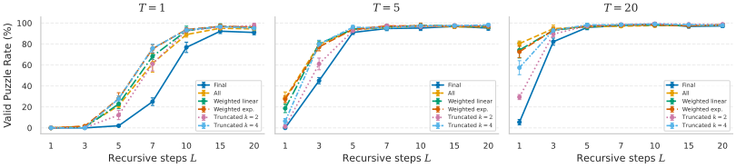
论文说 All 不增加前向计算，只是因为要对每一遍反传而略增显存。这在“共享块”的意义上是对的。严格地说，All 要在每一遍之后都过一次输出头；数独、Countdown 的词表只有 10–26 个符号，这部分计算可以忽略，但 TinyGSM 的词表有 49,154 个符号，输出头就不便宜了（见本节 3.4 的推算）。
（三）训练时循环几遍：递减课程最好。训练时每步循环的次数记为 \(L_t\)，推理时的记为 \(L_s\)（这里的下标 \(t\)、\(s\) 指 train 和 sample，不是时间步）。作者比较了五种安排：固定 \(L_t=5\)；每个批次随机抽（均匀分布，或 Huginn 式的泊松分布）；线性递增课程（训练初期循环 1 遍，逐渐增加到 10 遍，记作 Schedule 1→10）；线性递减课程（从 10 遍逐渐减到 1 遍，记作 Schedule 10→1）。课程的公式是 \(L_t=\mathrm{round}\big(L_{\text{start}}+\alpha(i)\,(L_{\text{end}}-L_{\text{start}})\big)\)，\(\alpha(i)\) 随训练迭代 \(i\) 从 0 线性涨到 1。
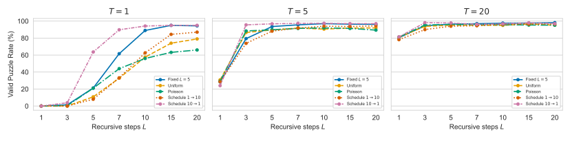
作者的解释是：训练初期循环很多遍，逼着模型学会多遍协同的复杂计算；后期减到一遍，再让它学会“每一遍都尽量有用”。这个解释是作者的推测，论文没有给出直接证据。另外值得注意的是训练成本：线性地从 10 遍减到 1 遍，平均每步约循环 5.5 遍（推算），和固定 \(L_t=5\) 的训练计算相近，所以这组比较大致是训练算力对齐的。但递减课程训练出来的模型如果推理时只循环 1 遍，表现明显不如一个从没循环过的普通模型（原文表 8 与表 7 的对比：\(T=40\) 时 85.2% 对 95.8%）。所以“灵活”是有代价的，原文第 5 节（本页第 7、8 节）用的循环模型都是这种递减课程训出来的（数独、Countdown 用 10→1，RNA、TinyGSM 用 5→1）。
3.3 训练时循环 \(L_t\) 遍，推理时可以循环 \(L_s\neq L_t\) 遍吗
既然每一遍都能读出预测、循环步嵌入又只依赖进度，推理时自然可以换一个遍数。附录 G.3 用固定 \(L_t\) 训练出的几个数独模型，交叉测试了不同的 \(L_s\)。
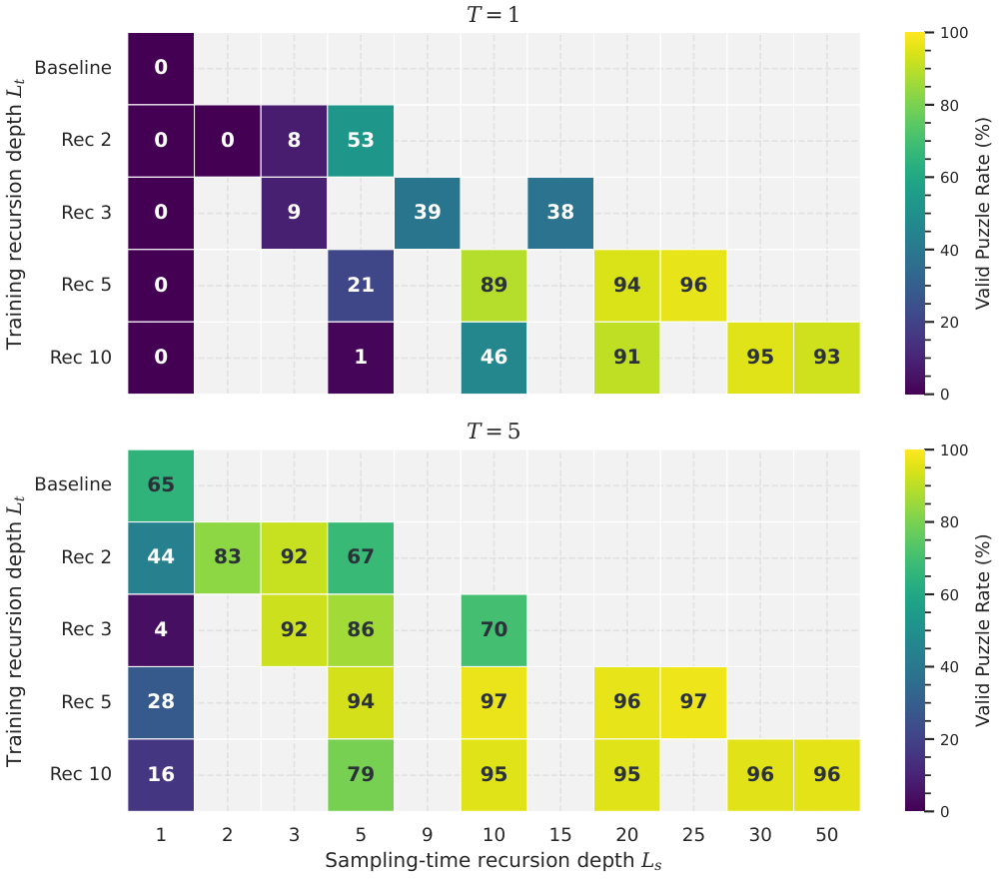
作者把第三点解释为：模型的表示被校准成大约在 \(L_t\) 遍左右收敛，远远超出这个范围就会“走过头”；循环步嵌入按进度编码，也可能是外推能力有限的原因之一。这个现象和本站 ELR 精读讨论的“一个模型、多种深度”是同一类问题：想要推理时随意调深度，训练时就得专门为此做安排，本文的递减课程是一种做法。
3.4 模型规模、训练配置与计算怎么记账
论文所有模型都很小。下表根据原文表 1、表 2 整理；参数量包含循环步嵌入（非循环基线没有这部分，例如数独基线是 1060 万）。
| 任务 | 块的层数 K | 宽度 d | 参数量 | 序列长度 | 词表 | 训练集 | 训练轮数 | 硬件 |
|---|---|---|---|---|---|---|---|---|
| 数独 9×9 | 6 | 384 | 10.8M | 81 | 10 | 180 万盘 | 10 | 1×A100-80GB |
| 数独 25×25 | 6 | 384 | 10.8M | 625 | 26 | 10 万盘 | 75 | 1×A100-80GB |
| Countdown（3/4/5 个数） | 3 | 384 | 5.5M | 48 / 64 | 18 | 每种 10 万题 | 300 | 1×A100-80GB |
| RNA | 12 | 480 | 33.7M | 256 | 25 | 3879 万条 | 1 | 1×H200 |
| TinyGSM | 12 | 768 | 161M | 512 | 49,154 | 1170 万题 | 1.4 | 8×H200 |
所有任务共用 AdamW、学习率 \(3\times10^{-4}\)、余弦退火加 2000 步预热。数独用二维旋转位置编码（行、列分开）再加一个“第几宫”的可学习嵌入，其余任务用一维 RoPE。RNA 借用 RiNALMo-micro 的编码器结构从头训练。
记 \(C_{\text{blk}}\) 为共享块对整条序列算一遍的计算量。普通 MDM 的 \((K\otimes 1)\) 生成一次，要走 \(T\) 步，每步算一遍块，总计 \(T\cdot C_{\text{blk}}\)。R-MDM 在第 \(t\) 步循环 \(\ell_t\) 遍（\(\ell_t\le L\)），总计算就是
论文就是这样记账的：把“共享块算一遍”记作一次函数求值（NFE），不管它发生在同一步的第几遍，还是新的一步的第一遍。于是：
- 固定每步循环 \(L\) 遍、走 \(T\) 步：\(\mathrm{NFE}=L\cdot T\)。
- 线性递减（第一步 \(L\) 遍，最后一步 1 遍）：\(\mathrm{NFE}\approx T(L+1)/2\)。
- 深模型 \((KL\otimes 1)\) 走 \(T\) 步：它自己只前向 \(T\) 次，但每次的计算是 \(L\cdot C_{\text{blk}}\)，换成同一单位也是 \(L\cdot T\)。这就是本页第 4 节“同 FLOPs”对比成立的原因。
这套记账忽略了三样东西，读数字时心里要有数。第一，输出头：用熵来决定停不停，就必须在每一遍之后算一次 logits。数独、Countdown 的词表很小，可以忽略；TinyGSM 的输出头每个位置约 \(2\times768\times49{,}154\approx7{,}550\) 万次浮点运算，而 12 层共享块每个位置约 1.89 亿次（推算，按每层 \(24d^2+4nd\) 估计，\(n=512\)），所以如果对所有位置都算，输出头相当于又加了约 40% 的一遍（推算）；实际只需对还空着的位置算，比例会小一些。第二，每次求值都处理整条序列：标准 MDM 没有自回归模型那种精确的 KV 缓存（Fast-dLLM 一类方法用的是近似缓存，本文没有用），所以 NFE 和“生成的 token 数”不是一回事。第三，NFE 不是墙钟时间：循环省下的是参数（显存里的权重），不是时间，同样的 NFE 下循环模型并不会更快。论文在数独上测了批大小为 1 时的延迟，基本和 NFE 成正比，例如普通模型 \(T=40\) 约 0.169 秒，\((6\otimes5)\) 在 \(T=5\) 时约 0.210 秒，深模型 \((30\otimes1)\) 在 \(T=5\) 时约 0.160 秒（原文表 7、表 9）。
4 递归深度能不能当一条扩展轴：同参数、同 FLOPs、同前向次数
数独。9×9 数独用的是 Shah 等（2024）整理的 180 万盘，评测时题目给出的数字保持可见，其余格子遮住让模型填。指标是有效率（Valid Puzzle Rate，VPR）：填完的盘面每一行、每一列、每一宫都恰好包含 1 到 9 各一次，才算有效。论文还报告一个更细的“软约束损失”（SCL），统计每一行、列、宫缺了多少个数字。另外还有一个 25×25 的大数独，是作者用一个固定解加随机的行列与数字置换合成的 10 万盘，评测时分别遮住 70%、80%、90% 的格子。
Countdown。给出 \(k\) 个 1 到 100 之间的数（\(k=3,4,5\)）和一个目标数，要求用加减乘除一步步把它们合并成目标数，每一步的结果必须是整数，用过的数不能再用。比如（本站自拟的例子）给出 3、5、8，目标 64，一个解是“5+3=8, 8×8=64”。模型看到题目，补全后面的算式。指标是达标率（Reaches Target Rate，RTR）：每一步算术正确、每一步用到的数当时确实还在“池子”里、最后池子里只剩目标数，三条都满足才算对。
两个任务都有很强的“全局约束”：数独里一个格子的值牵动同行、同列、同宫的其他格子；Countdown 里前一步的结果决定后一步能用什么数。所以“同时填好几个格子”的风险很高，非常适合研究并行解码的错误。所有数字都是 5 次采样、每次 100 个样本的均值和标准差；标准差只反映采样的随机性，每种配置只训练了一个模型，没有反映训练随机种子的差异。
4.1 同参数：循环越多越好，步数越少越明显
第一个对比固定参数量：同一个结构，训练和推理都循环 \(L\) 遍（\(L=L_t=L_s\)），和不循环的普通模型比，去噪步数 \(T\) 相同，每步提交最有把握的那些 token。这个对比给循环模型多花了 \(L\) 倍的计算，问的是“这些额外计算换来了多少质量”。
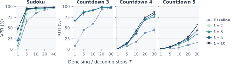
几个具体数字（原文表 7、表 12）：Countdown-3 在 \(T=10\) 时，基线 59.4%，\(L=3\) 已到 92.4%；更难的 Countdown-5 在 \(T=30\) 时，基线只有 15.6%，\(L=10\) 有 56.4%；数独一步生成（\(T=1\)）时，基线是 0%，\(L=10\) 有 46.4%。为什么步数越少，循环越有用？下一节会给出严格的解释，这里先给直觉：步数少，意味着每一步要同时填很多格子；每个格子的预测哪怕只有一点不准，同时填的格子多了，错误就会叠加，很快把整盘做坏。循环让每个格子在落子前被“多想几遍”，单个格子的预测更准，叠加起来的错误就少了。步数多的时候，每步只填一两个格子，本来就不容易出错，循环能改进的空间自然变小。
4.2 同 FLOPs：循环的小块对上同样深的大模型
第二个对比把计算对齐：\((K\otimes L)\) 对 \((KL\otimes 1)\)，两者每次前向的计算相同、去噪步数相同、训练步数也相同，区别只在于前者把同一份 \(K\) 层参数用了 \(L\) 遍，后者有 \(KL\) 层各不相同的参数，多了 \(L\) 倍。这个对比问的是：共享参数之后，同样的计算能不能保持同样的能力。
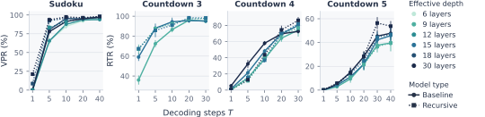
论文正文挑出的例子都对循环有利：数独 \(T=5\) 时，\((6\otimes5)\) 用 1080 万参数达到 93.6%，30 层的普通模型用 5310 万参数只有 77.8%；Countdown-4 在 \(T=20\) 时，\((3\otimes5)\) 和 \((3\otimes10)\) 分别是 70.2% 和 74.4%，对应的 15 层和 30 层普通模型是 69.4% 和 69.6%，参数少 5 到 10 倍。把附录的完整表格（表 7、9、12、13）对齐来看，结论要更细一些：
| 任务与步数 | 循环模型（参数） | 同深度普通模型（参数） | 谁更好 |
|---|---|---|---|
| 数独 \(T=1\) | 6⊗5：21.2%（10.8M） | 30 层：0.2%（53.1M） | 循环 |
| 数独 \(T=5\) | 6⊗5：93.6% | 30 层：77.8% | 循环 |
| 数独 \(T=5\) | 6⊗3：92.4% | 18 层：80.6%（31.9M） | 循环 |
| 数独 \(T=40\) | 6⊗5：98.0% | 30 层：97.2% | 接近 |
| Countdown-3 \(T=10\) | 3⊗5：91.0%（5.5M） | 15 层：94.4%（26.7M） | 接近，普通略好 |
| Countdown-4 \(T=10\) | 3⊗5：37.0%；3⊗10：43.6% | 15 层：48.2%；30 层：58.0%（53.3M） | 普通模型 |
| Countdown-4 \(T=20\) | 3⊗5：70.2%；3⊗10：74.4% | 15 层：69.4%；30 层：69.6% | 接近（在标准差内）／循环略好 |
| Countdown-4 \(T=30\) | 3⊗5：81.8%；3⊗10：86.2% | 15 层：80.0%；30 层：72.6% | 接近／循环 |
| Countdown-5 \(T=30\) | 3⊗5：44.4%；3⊗10：56.4% | 15 层：42.2%；30 层：45.4% | 接近／循环 |
所以更准确的说法是：在数独上，同样的计算下循环模型几乎全面占优；在 Countdown 上，步数少时深的普通模型可能更好，步数多时循环模型追平或反超。论文用“matches or outperforms”概括，对数独是准确的，对 Countdown-4 的小步数情形则不成立。
作者还指出一个现象，说明循环的好处不只是“深度更深”：数独 \(T=40\) 时，把普通模型从 18 层加深到 30 层，有效率只从 96.6% 升到 97.2%；而保持 6 层参数、把循环从 1 遍加到 5 遍，有效率从 95.8% 升到 98.0%。作者把这解读为“在固定的局面上反复精炼”带来了深度之外的收益。
4.3 同前向次数：把计算花在循环上还是花在去噪步上
第三个对比最贴近“两种算力能不能互换”这个问题。作者固定一次生成的总前向次数 \(x=T\times L_s\)（也就是 NFE），比较两种花法：一个不循环的普通模型把 \(x\) 全部花在去噪步上（\(T=x\)）；一个用递减课程（10→1）训练出的循环模型，在不同的 \(L_s\) 下用 \(T=x/L_s\) 步。两者参数相同，推理计算相同，但循环模型的训练计算大约是普通模型的 5.5 倍（推算，见本页 3.2 节）。
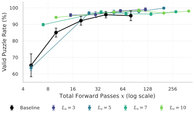
作者从这张图读出两点。第一，小预算下循环更划算：课程模型 \(L_s=3,T=5\) 用 15 次前向达到 95.6%，普通模型要 40 次才到 95.8%，前向次数省了约 2.7 倍。第二，循环抬高了天花板：普通模型再加步数也停在 96% 左右，循环模型能接近 100%。两种算力每一份的价钱一样（都是一次前向），效果却不一样，这正是下一节要解释的现象。
4.4 更大的数独：遮得越多，循环越关键
在 25×25 的大数独上，作者用固定 \(L\) 训练和推理（\(L_t=L_s=L\)），分别遮住 70%、80%、90% 的格子测试。
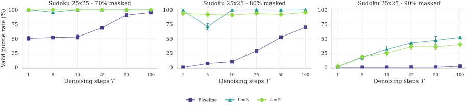
作者的解读是：给出的数字越少，模型越需要把全局约束在整张盘面上传开，每一遍循环都是一次完整的 6 层双向计算，正好提供了这种“传话”的机会，所以循环的价值随遮挡比例上升而放大。
4.5 这些对比各自匹配了什么
把本节和原文第 5 节（本页第 8 节）用到的几组对比放在一起看（训练计算一栏为本站推算）：
| 对比 | 循环模型 vs 对照 | 参数 | 每次前向的计算 | 一次生成的计算 | 训练计算 | 论文结论 |
|---|---|---|---|---|---|---|
| 同参数（原文图 2） | \(K\otimes L\) vs \(K\otimes1\)，\(T\) 相同 | 相同 | \(L\) 倍 | \(L\) 倍 | 约 \(L\) 倍 | 质量提高，\(T\) 小时最明显 |
| 同 FLOPs（原文图 3） | \(K\otimes L\) vs \(KL\otimes1\)，\(T\) 相同 | \(1/L\) | 相同 | 相同 | 相同（训练步数相同） | 数独上更好；Countdown 上互有胜负 |
| 同前向次数（原文图 15） | 课程模型 \(6\otimes L_s\) vs \(6\otimes1\)，\(T\times L_s\) 相同 | 相同 | \(L_s\) 倍 | 相同 | 约 5.5 倍 | 小预算下更好，上限更高 |
| 原文第 5 节的解码器（原文图 8） | 课程模型 vs 单独训练的普通模型，横轴是实际 NFE | 相同 | 可变 | 看横轴 | 约 5.5 倍（数独、Countdown）／约 3 倍（RNA、TinyGSM） | 见本页第 8 节 |
没有任何一组对比和自回归模型比较，也没有一组对齐墙钟时间（延迟只在数独上、批大小为 1 时测过）。
5 并行解码的误差可以拆成两块：依赖误差与保真误差
下面都用自然对数，单位是“奈特”（nats）。
- 熵 \(H(p)=-\sum_v p(v)\log p(v)\) 衡量一个分布有多“拿不准”。确定的分布（某个值概率为 1）熵为 0；两个值各一半，熵是 \(\ln 2\approx0.693\)。
- KL 散度 \(D_{\mathrm{KL}}(p\,\|\,q)=\sum_v p(v)\log\frac{p(v)}{q(v)}\) 衡量“真实分布是 \(p\)，却按 \(q\) 去抽样或编码”要付出的额外代价。它总是非负，只有 \(q=p\) 时为 0。一个常用的等式是：交叉熵 = 熵 + KL，也就是 \(-\sum_v p(v)\log q(v)=H(p)+D_{\mathrm{KL}}(p\,\|\,q)\)。
- 互信息 \(I(X;Y)=H(X)-H(X\mid Y)\) 衡量“知道 \(Y\) 之后，\(X\) 的不确定性少了多少”。两者独立时为 0。
- 总相关（total correlation，也叫多元互信息）把互信息推广到多个变量：\(\mathrm{TC}(p)=\sum_i H(p_i)-H(p)\)，即“各个变量各自的熵之和”减去“它们合在一起的熵”。各变量相互独立时，合起来的熵正好等于各自熵之和，TC 为 0；它们越相互牵制，合起来的熵就比各自之和小得越多，TC 越大。它也等于 \(D_{\mathrm{KL}}\big(p\,\big\|\,\prod_i p_i\big)\)：把一个联合分布硬当成“各自独立”时损失的信息。
5.1 一步之内的误差分解
把解码过程写得精确一点。某一步时，画布的状态是 \(s=(x_O,M)\)：\(O\) 是已经填好的位置，\(M\) 是还空着的位置。这一步先在 \(s\) 上循环若干遍，读出每个空位 \(i\) 的边缘分布 \(q_i\)；再选一个提交集合 \(U\subseteq M\)；最后对 \(U\) 里的每个位置独立地抽样。理想的做法应该是从“真实的条件联合分布” \(p^\star(x_U\mid s)=\pi_{\text{data}}(x_U\mid x_O)\) 里一起抽，也就是考虑这些位置之间的相互牵制。实际做法用的却是 \(\prod_{i\in U}q_i\)：既用了模型自己估计的边缘，又假设它们相互独立。论文的引理 4.1（沿用 EB-Sampler 的分解）说，这一步的误差正好拆成两项：
证明只有一行：把左边的 KL 展开，联合分布的熵单独拿出来，剩下的交叉熵按位置拆开，每个位置用“交叉熵 = 熵 + KL”，重新组合就得到右边。两项都非负。
- 保真误差 \(D_{\mathrm{fid}}\)：模型对每个提交位置单独看时猜得有多不准。它衡量的是模型的边缘分布 \(q_i\) 离真实边缘 \(p^\star_i\) 有多远；如果模型的每个边缘都和真实边缘一模一样，它就是 0。
- 依赖误差 \(D_{\mathrm{dep}}\)：就算每个位置单独看都猜得完全对，把本来相互牵制的几个位置当成独立的来同时抽，也会损失信息。它等于真实条件联合分布的总相关，完全不依赖模型，只取决于任务本身（\(p^\star\)）、当前局面 \(s\) 和这一步选了哪些位置一起提交（\(U\)）。
设数独某一行只剩两个空格 A、B，剩下的候选数都是 {1, 2}。同一行不能重复，所以合法的填法只有两种：(A=1, B=2) 和 (A=2, B=1)，各占一半。
| 填法 | 真实联合分布 \(p^\star\) | 真实边缘各自独立抽（完美边缘） | 模型边缘 \(q_A=(0.8,0.2)\)、\(q_B=(0.5,0.5)\) 独立抽 |
|---|---|---|---|
| A=1, B=2 ✓ | 0.5 | 0.25 | 0.40 |
| A=2, B=1 ✓ | 0.5 | 0.25 | 0.10 |
| A=1, B=1 ✗ | 0 | 0.25 | 0.40 |
| A=2, B=2 ✗ | 0 | 0.25 | 0.10 |
| 冲突概率 | 0 | 50% | 50% |
5.2 两项误差各听谁的话
分解的价值在于它把“谁能降低哪一项”说清楚了。
循环只能动保真误差。多循环一遍，画布状态 \(s\) 没变，提交集合 \(U\) 也没变（在提交顺序固定的前提下），只有模型的边缘分布 \(q_i\) 变了。而依赖误差根本不含 \(q\)，所以循环对它无能为力。循环能做的，是把 \(q_i\) 推向真实边缘 \(p^\star_i\)，降低保真误差。
去噪步只能动依赖误差。把一次提交 \(U\) 拆成先提交 \(A\)、再提交 \(B\)（\(A\cup B=U\)），依赖误差会精确地减少 \(B\) 中每个位置与 \(A\) 之间的互信息之和（附录 A 的引理 A.6 与推论 A.7）：
这里 \(s_A\) 是先把 \(A\) 填好之后的新局面。因为互信息非负，所以“拆开提交”永远不会让依赖误差变大。极端情况有两个：一步把所有空格全填完（\(T=1\)），依赖误差等于整个答案的总相关，最大；每步只填一个格子，单个变量的总相关为 0，依赖误差整个消失。这正是“步数越多质量越好”的严格版本。
把整条解码轨迹上每一步的误差加起来（定理 A.5），总误差等于“沿轨迹累积的依赖误差”加上“沿轨迹累积的保真误差”。前者只由提交计划决定，后者由模型决定。丢掉非负的后者，就得到一个依赖误差的下限：提交计划一旦定了，模型再好、循环再多，总误差也低不过这个下限。论文把它叫作“依赖地板”（dependence floor）。
这就解释了本页第 4 节的现象。步数少时，每步提交很多格子。对于只有唯一解的数独，真实条件分布是一个确定的点，依赖误差恒为 0，所有错误都来自保真误差，而大批量提交把保真误差放大了，所以循环特别有用。步数多时，每步提交很少，保真误差被放大得少，循环的收益也就小了。而对于有多个合法答案的问题，循环把保真误差压低以后，剩下的就是依赖地板，这时只有减小每步提交量才有用。
5.3 为什么熵能当“提交多少”的信号
实际解码时既不知道 \(p^\star\)，也就算不出依赖误差。EB-Sampler 的思路是用熵给它一个上界。附录 A 的命题 A.3 把这个上界写得更完整：
其中 \(H_i=H(q_i)\) 是模型自己预测的熵，是能算出来的。直觉是：总相关不可能超过“各自的熵之和减去其中最大的那个”（因为联合熵至少和任何一个变量的熵一样大）。如果用真实边缘的熵，这个上界就是 EB-Sampler 的；换成模型的熵，就要多付一个修正项 \(\varepsilon\)，即模型熵和真实熵之差的总和。论文进一步证明，在每个位置的保真误差不太大的条件下，\(\varepsilon\) 被平均每个位置的保真误差控制住，保真误差趋于 0 时它也趋于 0（证明用到 Pinsker 不等式和 Fannes 型的熵连续性不等式）。
这给了循环第二个作用：循环把保真误差压低，模型的熵就变得更可信，于是“按熵挑低熵位置一起提交”这条规则的保证也更可靠。在上面两格的例子里，\(H_A+H_B-\max(H_A,H_B)=\ln2\)，上界恰好等于真实的依赖误差。本页第 7 节的解码器用的提交规则“熵之和不超过 \(\delta\)”比这个上界更严格（因为少减了最大的那一项），所以也能控制依赖误差。
- 分解本身是一个恒等式，加上“丢掉非负项”得到的下界。它不是最优性结果：它没有证明循环一定会让保真误差单调下降（这是一个关于训练好的模型的经验问题，下一节用实验检查），也没有给出在固定 NFE 下 \(T\) 和 \(L\) 该怎么分配的最优解。
- “循环不改变依赖误差”的前提是提交集合不随循环变化。实际常用的按置信度提交，会因为循环改变了预测而改变 \(U\)，从而间接改变依赖误差。所以下一节的实验特意固定了随机的提交顺序。
- 理论分析的是直接从 softmax 分布 \(q_i\) 抽样的采样器。实验里实际用的是加了温度和 top-\(k\) 截断的分布，Countdown 和 TinyGSM 甚至是 \(k=1\)（贪心）。截断后的分布支撑集变小，真实值落在支撑集外时 KL 是无穷大，这些有限值的结论对它们并不直接成立（附录 A 的注 A.2）。
- 任务指标（有效率、达标率、正确率）不是 KL 的单调函数，所以实验只用任务指标检验理论的定性预测，而不是去估计两项误差的大小。
6 受控实验：在多解数独上把两项误差精确算出来
6.1 盘面怎么造
作者从留出的已解数独出发，随机挖掉一定数量的格子，再用精确求解器枚举所有合法的填法。挖得越多，解越多（原文表 3，每行 300 个随机挖法）：挖 40 格时 43% 的盘面仍是唯一解；挖 48 格时只剩 6%，56% 有 6–50 个解，11% 有 51–500 个解；挖 52 格时 12% 的盘面超过 500 个解。作者固定挖 48 格，因为这时各种解数都会出现，而且每组的空格数相同，每步提交 \(k=48/T\) 个格子，解的个数不会和空格数混在一起。按解的个数 \(S\) 分成四组（1、2–5、6–50、51–500），每组用拒绝采样凑满 50 盘；唯一解的一组当对照，它的依赖误差恒为 0。
真实分布取“所有合法填法上的均匀分布”。严格说，数据分布应该是 180 万盘训练集的经验分布，但 9×9 数独的合法终盘约有 \(6.7\times10^{21}\) 种，一个盘面的各个填法几乎不可能出现在训练集里，均匀分布是最自然的读法。有了所有合法填法，任何局面下的真实条件联合分布、真实边缘、依赖误差、保真误差都能精确算出。
实验用的是一个训练时固定循环 5 遍的数独模型，推理时取 \(L\in\{1,3,5,10\}\)、\(T\in\{1,2,4,8,16,48\}\)。关键的控制是：每盘、每个样本在解码前先抽一个随机的填格顺序，每步按这个顺序填接下来的 \(k\) 个格子，而且这个顺序在不同的 \(L\)、\(T\) 之间共享。这样提交集合与模型预测无关，依赖误差在不同 \(L\) 之间按构造完全相同，任何差别都只能来自保真误差。作者还设置了一个参照：“完美边缘”采样器，它对每个格子都用真实边缘 \(p^\star_i\)，但同样在一步之内独立地抽，所以它犯的错全是依赖错误。每个配置是 50 盘 × 64 个样本。
6.2 两项误差各自怎么变
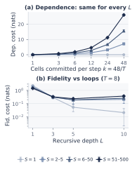
这两张图正好对应理论的两条预测：依赖误差只听提交大小的，保真误差只听循环的。保真误差在多解盘面上走平，说明循环的收益本身是有尽头的，这也启发了原文第 5 节（本页第 7 节）“该停就停”的自适应循环规则。
6.3 失败率逼近“依赖地板”
理论说的是 KL，实际关心的是盘面会不会填坏。作者把失败分成两类：同步冲突（parallel clash，同一步里同时填的两个格子相互矛盾）和旧格冲突（old-cell clash，新填的格子和之前填好的格子矛盾），一盘在第一次违规时就算失败。
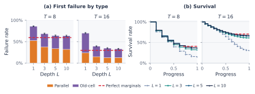
附录 E 还做了一个更细的标注：因为所有合法填法已知，可以判断盘面在哪一步变得不可能完成。如果某个填上的值在任何合法填法里都不出现，那是“边缘错误”（单独填也会错）；如果每个值单独看都可能出现，但没有一个合法填法同时包含它们，那是“联合错误”（依赖错误）。用这套标注得到三个发现：
- 旧格冲突几乎从来不是最初的错误：在 97%–100% 的旧格冲突里，盘面在更早的某一步就已经不可能完成了，只是当时没有表面上的冲突（论文叫“无声的死路”）。
- 同步冲突大多就是最初的错误。在多解盘面上、\(L=5\) 时，83%–88% 的同步冲突是联合错误；在唯一解盘面上这个比例是 0%，因为那里不可能有联合错误。
- \(L=5\) 时，模型沿轨迹犯联合错误的总概率已经达到完美边缘采样器的 93%–98%，\(L=10\) 也不再变化。也就是说，循环把能消掉的错误基本都消掉了。
作者还注意到，循环在解码的中段最有用：开始时填好的格子很少，真实边缘本身就很分散，预测再尖锐也没多少可改进的；接近结束时预测已经很尖锐了。这个观察后面会在熵的实验里再次出现。
完成率（盘面最终被填成合法终盘的比例）的完整表格（原文表 4）里，有几行特别能说明问题：
| 解数组 | \(T\) | \(L=1\) | \(L=3\) | \(L=5\) | \(L=10\) | 完美边缘（上限） |
|---|---|---|---|---|---|---|
| \(S=1\) | 1 | 0.4 | 50.3 | 89.9 | 97.9 | 100 |
| \(S=1\) | 16 | 27.5 | 85.9 | 97.8 | 99.0 | 100 |
| \(S=2\)–5 | 4 | 7.6 | 33.4 | 42.4 | 43.4 | 47.0 |
| \(S=6\)–50 | 1 | 0.0 | 0.0 | 0.0 | 0.0 | 0.0 |
| \(S=6\)–50 | 16 | 31.6 | 65.9 | 70.6 | 71.7 | 76.1 |
| \(S=51\)–500 | 16 | 27.0 | 54.4 | 59.6 | 61.1 | 64.7 |
第一行最醒目：唯一解时一步填完 48 格，不循环的模型几乎从不成功（0.4%），循环 10 遍就有 97.9%。这说明唯一解问题里“一步生成”的瓶颈完全是保真误差，循环可以把它几乎消除。第四行则相反：有 6–50 个解时一步填完，连完美边缘采样器也是 0%，因为 48 个格子各自独立地从“正确的”边缘里抽，几乎不可能恰好凑成同一个合法解，这是纯粹的依赖地板，循环毫无办法。其余几行在中间：循环把完成率推到离上限只差 2–6 个百分点的地方，然后就停住了。
7 两轴解码器：用熵决定“再想一遍”还是“落子”
7.1 把解码写成两个规则
作者把任何一个 R-MDM 解码器都写成一对规则，命名为“循环规则_提交规则”：循环规则决定在当前局面 \(s_t\) 上循环几遍（\(\ell_t\le L\)），提交规则决定填哪些空位（\(U_t\subseteq M_t\)）。每步至少提交一个位置，保证解码一定会结束。计算量按 \(\mathrm{NFE}=\sum_t\ell_t\) 记。
7.2 熵为什么能同时指导两件事
真正想监控的是保真误差，但它需要真实边缘，推理时拿不到。作者退而求其次，监控“预测还在不在变尖锐”：对当前所有空位的熵取平均，看相邻两遍之间下降了多少：
熵的增益大，说明这一遍还在让预测变确定；增益很小，说明再循环收益不大。熵有一个实际的好处：每一遍之后本来就要读出各位置的分布，算熵不需要额外的网络前向。另一方面，本页第 5 节的命题说明，低熵位置一起提交，依赖误差就有上界；而循环让模型的熵更可信。于是同一个量，既能决定“要不要再循环”，又能决定“提交哪些”。
想知道“熵高低”能不能预测“这个位置会不会填错”，可以这样检验：随机拿一个最终填错的位置和一个填对的位置，看填错的那个熵更高的概率是多少。这个概率就是 ROC 曲线下面积（AUROC）。0.5 表示熵和对错毫无关系（等于抛硬币），1 表示熵能完美区分对错。
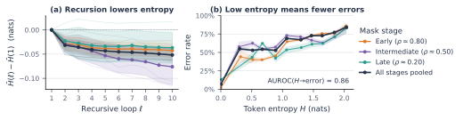
作者特意提醒：一遍循环可能让某些位置更确定、让另一些位置更不确定，平均熵只是一个标量摘要，两个熵相同的分布也可能差得很远。所以熵增益只是一个实用的停止信号，不是“已经收敛”的证明。
7.3 entropy_entropy 解码器
把两条规则都换成基于熵的版本，就是本文的解码器 entropy_entropy（原文算法 2）。在每个去噪步：
- 循环规则：第一遍无条件执行；从第二遍起，每遍之后算平均熵增益，一旦小于阈值 \(\lambda\)（或者已经循环满 \(L\) 遍）就停下。
- 提交规则：把空位按熵从低到高排序，依次加入提交集合，直到加入下一个会让熵之和超过预算 \(\delta\) 为止，即保持 \(\sum_{i\in U_t}H\big(q^{(\ell_t)}_i\big)\le\delta\)；如果连熵最低的那一个都超预算，也强制提交它一个（单个位置的依赖误差为 0）。
- 对 \(U_t\) 里的每个位置独立抽样，填上，进入下一步，直到没有空位。
# 原文算法 2 的结构（本站改写的示意，提交时用当前这一遍的分布）
while masked: # 去噪步：直到没有空位
h = embed(canvas) # 每一步都从当前画布的嵌入重新开始
for l in range(1, L + 1): # 循环：同一局面上最多 L 遍
h = f(norm(h + v[l])) # 共享块再算一遍
q = softmax(head(norm(h))) # 读出每个空位的分布 q_i
if l >= 2 and mean_H(q_prev) - mean_H(q) < lam:
break # 平均熵几乎不降了：停止循环
q_prev = q
U = lowest_entropy_set(q, budget=delta) # 熵之和 <= delta，至少 1 个
canvas = commit(canvas, sample_independently(q, U)) # 填上，画布改变
两个规则都不需要事先指定去噪步数 \(T\)：步数由提交规则自己决定，难的局面一步提交得少，容易的局面一步提交得多。以数独为例，论文选的预算是 \(\delta=0.25\) 奈特（原文表 6）；一个还在两个数之间犹豫的格子，熵是 \(\ln2\approx0.693\)，单独一个就超预算，只有在没有更确定的格子可填时才会被强制单独提交（推算的例子）。这正是在避免本页第 5 节小例子里那种“两个犹豫的格子同时落子”的冲突。
附录 F.4 还有两个小消融。第一，循环规则在第 \(\ell\) 遍触发停止时，用哪一遍的分布去提交：用当前这一遍（curr）、上一遍（prev），还是两者中熵改善了的那个（best）？结果 curr 最好，作者选了它。第二，提交规则用“熵之和不超过 \(\delta\)”，还是 EB-Sampler 式的“熵之和减最大熵不超过 \(\gamma\)”？后者允许一次提交更多，但在数独上更容易造成无法挽回的冲突：熵循环加熵提交在 \(L=7\) 和 \(L=10\) 时有效率为 0.90 和 0.94，换成 EB 式提交是 0.76 和 0.92（每个配置 50 盘），所以作者保留了更严格的熵之和规则。
7.4 对照的解码器与阈值怎么选
为了看清“哪一条轴自适应更重要”，作者把循环规则和提交规则做成一张交叉表（原文附录 F，共 10 种组合）：
- 循环规则：fixed（每步循环满 \(L\) 遍）；sched（从第一步的 \(L\) 遍线性减到最后一步的 1 遍，平均约 \((L+1)/2\) 遍）；entropy（熵增益小于 \(\lambda\) 就停）；hidden（隐状态的相对变化 \(\|\mathbf{h}^{(\ell)}-\mathbf{h}^{(\ell-1)}\|/\|\mathbf{h}^{(\ell)}\|\) 小于 \(\varepsilon\) 就停，来自 LoopMDM）。
- 提交规则：uniform（每步提交 \(|M_0|/T\) 个置信度最高的位置，需要指定 \(T\)）；confidence（提交所有 top-1 概率超过 \(c\) 的位置，MaskGIT 式）；entropy（上面的熵预算）。
只有 uniform 提交和 sched 循环会用到 \(T\)。凡是用阈值提交（confidence、entropy）的组合都不读 \(T\)，一直解到没有空位为止，所以它们的质量和 NFE 不随 \(T\) 变，只随 \(L\) 和阈值变。论文正文图 8 主要比较四种：fixed_uniform（本页第 4 节那些实验默认的做法）、fixed_entropy（只让提交自适应）、entropy_uniform（只让循环自适应）、entropy_entropy（两者都自适应）。hidden 规则的质量和 entropy 规则差不多，但 NFE 更高（附录 G.6），这是作者选择熵的理由之一。
四个阈值按数据集各选一个值，候选是 \(\lambda\in\{10^{-3},\dots,0.5\}\)、\(\delta\in\{0.25,\dots,8\}\)、\(\varepsilon\in\{0.01,\dots,1\}\)、\(c\in\{0.5,\dots,0.99\}\)，从验证集上的“质量—NFE”图里挑靠近前沿、\(L\) 适中、NFE 较低的设置。采样温度和 top-\(k\) 则按数据集固定，不调：数独和 RNA 是温度 0.8、top-2，Countdown 是温度 0.5、top-1，TinyGSM 是温度 0.8、top-1。
8 四个任务上的验证，以及这些数字的份量
RNA 是由 A、C、G、U 四种碱基组成的链。链上相隔很远的碱基可以配对（A 配 U，G 配 C），让整条链折叠成稳定的二级结构，折叠越稳定，“最小自由能”（MFE，单位 kcal/mol）越低。所以如果随机遮住一段 RNA 的 40% 碱基让模型补全，补得好不好不能只看“和原序列一样不一样”（那会鼓励死记硬背），而要看补出来的序列能不能折叠得和原来一样稳定。
直接比 MFE 也不行，因为它强烈依赖序列长度和碱基组成。作者用一个标准化的分数：把序列的碱基随机打乱 20 次，算打乱后序列的 MFE 均值和标准差，再看原序列比打乱的低了几个标准差：
\(Z\) 越负，说明折叠得比“同样成分的随机序列”稳定得越多。\(\Delta Z\) 是补全序列和原生序列的 \(Z\) 之差：等于 0 表示补得和原生分子一样有结构，越大越差。MFE 用 ViennaRNA 计算。数据来自 RNAcentral，评测时在 76、110、254 个碱基三种长度上各取 500 条，分别用 \(T=6\)、9、20 步，使每步大约提交 5 个碱基。论文同时报告“遮住位置的还原率”（约 60%，远高于随机猜的 25%）和“完全还原率”（约 2%），后者很低说明好的 \(\Delta Z\) 不是靠背出原序列得来的。
TinyGSM 是一个由 GPT-3.5 生成的合成数据集，题目是小学数学应用题，答案是一段 Python 程序。作者用 1170 万条训练一个 1.61 亿参数的 R-MDM（12 层块，序列长 512，SmolLM 分词器，词表 49,154），在 GSM8K 测试集的 512 道题上评测：题目作为前缀固定，后面 512 个位置全部遮住让模型生成程序，抽出名为 simple_math_problem 的函数在沙箱里运行，返回值等于标准答案才算对。
原文第 5 节用的循环模型都是递减课程训练的（数独、Countdown 用 10→1，RNA、TinyGSM 用 5→1），因为解码器要在推理时改变循环次数。不循环的基线是一个结构相同、单独训练、从不循环的模型。
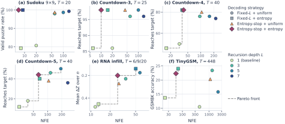
8.1 论文报告的主要数字
正文说，最好的循环结果在每个任务上都超过不循环的基线：数独有效率从 80.7% 到 100%；Countdown-4 达标率从 50.0% 到 82.0%；RNA 的 \(\Delta Z\) 从 0.453 降到 0.140，相当于把和原生分子之间的差距缩小了 69%（\((0.453-0.140)/0.453\)）；TinyGSM 的 GSM8K 正确率从 13.7% 到 24.0%。关于效率，作者强调了两点：
- 长序列上，提交规则的自适应贡献了大部分节省。TinyGSM 上 fixed_entropy 在 \(L=3\) 时用 69 次 NFE 拿到 24.0%，和 fixed_uniform 的最好成绩 24.2%（\(L=3,T=256\)，768 次 NFE）几乎一样，计算省了约 11 倍。而在此基础上再让循环自适应（entropy_entropy），每步只少循环约半遍，正确率反而略降到 22.3%（57 次 NFE）。
- 允许很大的 \(L\) 时，循环规则的自适应就必不可少。Countdown-4 上，fixed_entropy 的 NFE 从 \(L=3\) 的 37 涨到 \(L=7\) 的 98，而 entropy_entropy 始终在 40 左右。附录 G.6 还指出，在 Countdown-4/5 上 fixed_uniform 循环太多反而变差（质量下降、NFE 继续上涨），熵门控的循环避免了这种“过度精炼”。但 Countdown-5 上绝对最高的达标率仍然是 fixed_uniform 拿到的，代价是好几倍的 NFE。
TinyGSM 的完整结果（原文表 15）值得列出来，因为正文的“13.7% 到 24.0%”只是其中两格：
| 模型 | 解码器 | \(L\) | \(T\) | GSM8K 正确率 | NFE | 512 题总采样时间 |
|---|---|---|---|---|---|---|
| 不循环基线 | fixed_uniform | 1 | 128 | 15.0% ± 1.6 | 128 | 1118 s |
| 不循环基线 | fixed_uniform | 1 | 448 | 10.5% ± 1.4 | 440 | 3792 s |
| 不循环基线 | fixed_entropy | 1 | — | 13.7% ± 1.5 | 22 | 218 s |
| R-MDM | fixed_uniform | 3 | 256 | 24.2% ± 1.9 | 768 | 4407 s |
| R-MDM | fixed_entropy | 3 | — | 24.0% ± 1.9 | 69 | 412 s |
| R-MDM | entropy_entropy | 3 | — | 22.3% ± 1.8 | 57 | 374 s |
| R-MDM | fixed_uniform | 5 | 128 | 16.0% ± 1.6 | 640 | 3623 s |
| R-MDM | entropy_entropy | 5 | — | 17.2% ± 1.7 | 63 | 406 s |
从表里还能读出两件正文没有强调的事：其一，这个用 5→1 课程训练的模型在 \(L=5\) 时明显不如 \(L=3\)（例如 entropy_entropy 17.2% 对 22.3%），循环多了反而变差；其二，不循环的基线在 \(T=128\) 之后继续加步数会变差（15.0% → 11.5% → 10.5%）。
RNA（原文表 14，遮 40%）的情况类似：不循环基线用 fixed_uniform 时 \(\Delta Z=0.478\)（11.7 次 NFE），用 fixed_entropy 时 0.453（13.2 次）；循环模型最好的是 fixed_entropy、\(L=5\)，\(\Delta Z=0.140\)，花了 50.3 次 NFE；entropy_entropy 在 \(L=3\) 和 \(L=5\) 时分别是 0.247 和 0.200，只花约 26 次 NFE。遮 50% 和 60% 时，循环的收益更大（例如遮 60% 时 fixed_entropy、\(L=5\) 的 \(\Delta Z\) 为 −0.014 ± 0.063，和原生分子在误差范围内持平）。
8.2 结果的份量
规模与任务。模型从 550 万到 1.61 亿参数，任务全是有明确约束的填空：数独、Countdown、RNA 局部补全、固定前缀下的程序生成。没有开放式文本生成，没有困惑度或似然评估，也没有通用语言模型的基准。数独和 Countdown 恰恰是“不按从左到右顺序生成更有利”的任务，并行提交的冲突在这里最致命，所以循环的收益在这里可能偏大。作者自己在结论里也说，能否推广到开放式语言生成还有待验证。
没有和自回归模型或同期循环方法比较。全文的对照都是作者用同一套代码训练的掩码扩散模型（不循环的、更深的），没有一个自回归基线，也没有和 LoopMDM、Fixed-Point MGM 比较。作为参照（不是同条件比较）：TinyGSM 原论文报告，用这份数据微调一个 13 亿参数的生成模型、再配一个 13 亿参数的验证器，GSM8K 能到 81.5%；本文从零训练的 1.61 亿参数 MDM 是 24%，绝对水平还很低。成本方面也要有数：TinyGSM 上 fixed_uniform、\(L=3\)、\(T=256\) 要 768 次 NFE，每次都把 512 个位置的 12 层块算一遍；一个同样大小、带 KV 缓存的自回归模型生成同样长度大约只需把每个位置算一遍，相差的“位置×块”计算量在几十倍（69 次 NFE 的 fixed_entropy）到几百倍（768 次 NFE）的量级（推算，非常粗略，且自回归模型并未在本文中训练和评测）。
匹配了什么。见本页第 4 节末尾的表。“同 FLOPs”一组对齐得最干净（参数之外全部相同），但只在数独上一边倒，在 Countdown 上互有胜负，而且深层基线没有单独调参。“同参数”和“同前向次数”两组都让循环模型多花了训练计算：固定 \(L\) 训练约 \(L\) 倍，10→1 课程约 5.5 倍，5→1 课程约 3 倍（推算）。NFE 不计输出头的计算，这在 TinyGSM 的大词表上不可忽略（本页 3.4 节推算约为一遍块的 40%，如对所有位置计算）。墙钟时间只在数独上以批大小 1 测过，大体和 NFE 成正比；论文没有在大批量下测吞吐。
正文的“从 A 到 B”比的是什么。几个标题数字都是“循环模型的某个最好配置”对“基线的某个配置”，两边的解码器、步数、NFE 并不相同，需要逐个拆开看：
- TinyGSM 的 13.7% 是基线用熵提交、只花 22 次 NFE 的结果；基线在表 15 里的最好成绩是 15.0%（\(T=128\)）。图 8 的 TinyGSM 子图用的是 \(T=448\)，基线的 uniform 解码在这里只有 10.5%。所以更公平的差距是 15.0% 对 24.0%（或 24.2%），约 9 个百分点；好在循环模型用的 NFE（69）还少于基线最好那一格（128），这个结论站得住。
- RNA 的 0.453 → 0.140 对应的 NFE 是 13.2 → 50.3，约 3.8 倍；基线没有在更大的 NFE 下测试，所以这不是同计算比较。
- 数独的基线 80.7% 是 fixed_uniform、\(T=20\) 的结果。但原文表 7（本页第 4 节引用过）里，同样不循环、同样 \(T=20\) 的基线是 92.2%；80.7% 反而和递减课程模型只循环 1 遍的 81.4%（表 8）很接近。论文说原文第 5 节的基线是单独训练的不循环模型，没有解释这个差距。这意味着“80.7% → 100%”里有一部分可能来自一个较弱的基线配置。
阈值在哪里选、在哪里测。四个阈值是在验证集的“质量—NFE”图上挑的。RNA 的评测明确是在验证集上做的；数独和 Countdown 的评测用的是留出的盘面，论文没有说明它们和调阈值用的是否是同一批。TinyGSM 在 GSM8K 测试集上评测，与调参数据分开。如果调参和评测用了同一批数据，自适应解码器的优势会被高估一些。
统计与复现。大部分表格的 ± 只来自重复采样（数独、Countdown 是 5 次 × 100 个样本，TinyGSM 是 512 题的二项标准误），每种配置只训了一个模型。截至 2026-10-20，没有公开代码，也没有找到独立复现。
综合起来，这篇论文最扎实的部分是机制层面：依赖误差与保真误差的分解是严格的，多解数独上的受控实验干净地验证了“循环只降保真误差、碰到依赖地板就停”的预测。“循环是一条可用的扩展轴”在小型结构化任务上有一致的证据，但离“在扩散语言模型上值得这么做”还隔着规模、开放文本和与自回归模型的成本比较这几步。
9 结论、局限与未来工作
作者的总结有三层。第一，在每个去噪步里把同一块 Transformer 用 \(L\) 遍，可以在不加参数的前提下加深有效深度；在数独和 Countdown 上，它在同参数下提高质量，在同 FLOPs 下追平明显更大的非递归模型，并且能减少达到某个质量所需的去噪步数。第二，这些收益可以用两种计算的不同角色解释：循环在固定局面上改进模型的边缘分布，去噪步通过提交 token 改变局面，所以它们降低的是并行解码误差里不同的两项；循环能减少预测的熵和同一步内的冲突，尤其是在每步要解决很多依赖的时候，但它消除不了一起提交的 token 之间的依赖误差。第三，这启发了按局面自适应的解码，同时选择循环几遍和提交哪些，在四个领域都改善了质量与计算的权衡。
作者明确的局限是：结论建立在结构化任务上，未来需要把这套框架推到更大的模型，并检验它在开放式语言生成这类结构更松散的场景里是否仍然成立。
本站补充三点。第一，论文的模型最大 1.61 亿参数，没有扩展律拟合，所以“递归深度的收益随规模如何变化”完全没有回答；Iso-Depth 在自回归语言模型上测得的“一遍循环约值 0.46 个独立块”提示，规模大了以后共享参数未必还这么划算。第二，循环在这里的收益和“并行提交的冲突”紧密相关；在扩散语言模型的实际部署中，人们往往用块扩散、置信度阈值等办法控制每步提交量（例如 Fast-dLLM、块扩散），这时依赖误差已经被压得比较低，循环的边际收益可能小于本文的结构化任务。第三，循环省的是参数显存，不是时间；扩散语言模型本来就以“少步数、高吞吐”为卖点，再把每步的计算乘上 \(L\)，需要非常有利的质量收益才划算，这笔账论文没有在语言任务上算过。
后来怎么样了
这篇论文 2026 年 6 月 16 日首次挂到 arXiv，9 月 28 日更新了 v2，v2 首页标注为“Preprint. Under review.”，即正在投稿审稿中。在此之前，它已经在 ICML 2026 的研讨会上出现过三次：以同名标题入选 “High Dimensional Learning Dynamics: the Science of Scaling” 研讨会（海报），以 “Scaling with Recursion in Masked Discrete Diffusion Models” 的标题入选第 4 届 “Structured Probabilistic Inference & Generative Modeling” 研讨会（海报）和 “Foundations of Deep Generative Models” 研讨会（口头报告）。研讨会论文一般不算正式发表。截至 2026-10-20，没有公开代码，我们也没有找到独立的复现或后续的实证检验。
在同一方向上，几项工作形成了一个小的“循环扩散语言模型”群：
- LoopMDM（2026-05，早于本文）只循环一部分层，并按隐状态变化自适应地决定循环次数，本文把它的停止规则当作对照。
- Fixed-Point Masked Generative Modeling（arXiv 2605.31215）用不动点求解器加跨步热启动，与本文有作者重叠；据第一作者主页，它已被 NeurIPS 2026 接收。
- ALoDLM（2026-10）在相关工作里把本文归为“为参数效率而循环”的一类，并指出本文和 LoopMDM 等在同一个去噪步里对所有位置用同样的循环深度；ALoDLM 的改进方向正是让每个 token 自己决定何时退出循环。
- 另一类“循环”，即跨去噪步传递连续状态的 Loopholing，以及 Loop-Distill，见各自的精读页。
本文最可能留下的东西，是原文第 4 节（本页第 5、6 节）的分析框架：把并行解码误差拆成“循环能降的保真误差”和“只有改提交计划才能降的依赖误差”，这为任何在扩散模型里加推理计算的方法（循环、重遮、规划顺序）提供了一个统一的记账方式。
作者
单位按论文署名。背景只列可公开查证的信息：作者主页、实验室与机构页面，以及论文本身的致谢。
影响力
- 引用：见页首（Semantic Scholar 快照）。已知引用它的工作包括 ALoDLM（2026-10）。
- 发表：arXiv v1 于 2026-06-16 发布，v2 于 2026-09-28 发布，首页标注 “Preprint. Under review.”。它也以研讨会论文的形式出现在 ICML 2026 的三个研讨会：High Dimensional Learning Dynamics（海报）↗、Structured Probabilistic Inference & Generative Modeling（海报）↗、Foundations of Deep Generative Models（口头报告）↗，后两者用的标题是 “Scaling with Recursion in Masked Discrete Diffusion Models”。
- 开源 / 采用：截至 2026-10-20，论文和研讨会页面都没有代码链接，我们在 GitHub 上也没有找到官方实现；没有找到独立复现。
延伸阅读
- 同一批“循环 × 扩散语言模型”的精读：Loopholing（跨去噪步传递连续状态）、LoopMDM（循环部分层）、ALoDLM（按 token 自适应循环深度）、Loop-Distill。
- 掩码扩散的基础与解码：MDLM、LLaDA、Token Ordering（数独上的自适应顺序）、Fast-dLLM（并行解码的依赖问题）、块扩散、超越掩码扩散的扩展律。
- 循环 Transformer：Universal Transformer、循环 Transformer 作为可编程计算机、潜在思考（\(K\otimes L\) 记号的来源）、Huginn、Ouro、Iso-Depth 扩展律、循环能替代多少参数、ELR（一个模型、多种深度）、TRM（深监督的递归推理）、Mixture-of-Recursions。
- 旧版扩散语言模型路线：扩散语言模型基础：画布、掩码与并行解码、MDLM 与 MD4、学会早定稿、任意顺序的利与弊。
- 返回论文书架
原文：Alba Carballo-Castro, Julianna Piskorz, Paulius Rauba, Mihaela van der Schaar, Pascal Frossard. Recursive Scaling in Masked Diffusion Models. arXiv 预印本，2026。arXiv:2606.18022，以 CC BY 4.0 许可发布。本页的原文图 2、3、4、5、7、8、9、11、14、15、16 取自 arXiv HTML 版（v2）原文，未做修改；图注为本站撰写。其余示意图由本站根据论文内容绘制，标“推算”的数字为本站计算。正文是本站撰写的中文精读笔记，并非翻译，数字与结论以原文为准。